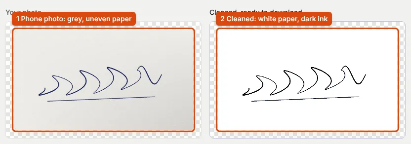
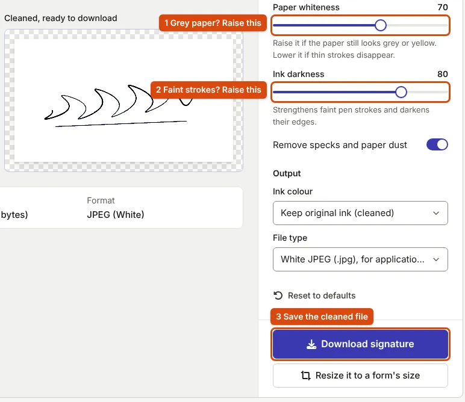
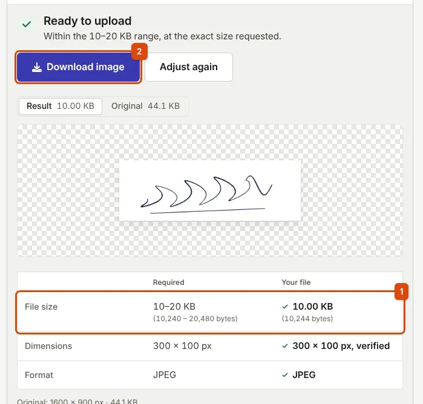

How to Make and Resize a Signature Image for a Form
Four stages: sign, photograph, clean and resize. The cleaner makes the paper white and the ink dark; the resizer sets the exact size and meets a minimum KB without changing the picture.
What this tutorial covers
Many forms ask you to "upload signature": a small picture of your handwritten signature, often with a size such as 300 × 100 px and a range such as 10 to 20 KB. This page gives the exact clicks in the signature cleaner and the signature resizer. How a signature image differs from a digital signature certificate, and which pen and paper work best, are covered in signature images for online forms.
Before you start
- Plain white paper without lines, and a black pen with a medium tip.
- A phone camera and daylight, or a scanner.
- The form's requirement: pixel size, the KB range (note the minimum as well as the maximum) and the format, usually JPEG.
- About five minutes.
Step 1: Sign and photograph it
Sign your normal signature, not your name in capital letters, and sign larger than usual so the strokes stay clear when the image is made small. Photograph it in daylight with the phone held level above the paper and no shadow across it. Fill most of the photo with the paper. Phone camera tips for document scans covers light and angle in more detail.
Step 2: Clean it
Open the signature cleaner and select Choose signature photo. It accepts JPG, PNG and WebP, and a phone photo is fine. The cleaned version appears at once beside your photo, under Before and after, with its dimensions, file size and format.

Under Clean up, adjust only if needed:
- Paper whiteness (70 to start): raise it if the paper still looks grey or yellow; lower it if thin strokes disappear.
- Ink darkness (80 to start): raise it for faint pen strokes.
- Remove specks and paper dust: on by default.

Under Output, keep File type on White JPEG (.jpg), for application forms. Ink colour can stay on Keep original ink (cleaned), or be set to Pure black or Deep blue if the form asks. Transparent PNG (.png), for documents is for placing a signature on a document you are editing, not for upload forms. Select Download signature; the file is named after your photo with Cleaned_ in front, for example Cleaned_test-signature.jpg.
Step 3: Open the resizer and add the cleaned file
Open the signature resizer (the cleaner's Resize it to a form's size button opens the image resizer with the signature choice selected, which works the same way). The first step shows Signature 300 × 100 px · under 30 KB · JPEG. If the form asks for something else, select Change: Thumb impression and Handwritten declaration are there too, and Custom size for anything else.
Select Choose image and pick the cleaned file you just downloaded. Drag it inside the frame so the ink fills most of it with a small margin; arrow keys move it and + and − zoom.
Step 4: Set the KB range, including the minimum
Open Size, file limit and format. Set the width and height if the form's size differs, then type the range: Minimum (KB) and Maximum (KB). A minimum matters for signatures. A small, clean signature is mostly white, which JPEG stores in very few bytes: our cleaned 300 × 100 px sample was well under 10 KB at full quality. Without a minimum, a portal that asks for 10 to 20 KB would refuse it.
Step 5: Resize and check
Select Resize and compress. When the file comes out under the minimum, the resizer adds padding: extra bytes inside the JPEG file that image viewers ignore. The picture itself does not change.

What you see: Ready to upload with Within the 10–20 KB range, at the exact size requested., and the table: File size 10–20 KB required, 10.00 KB (10,244 bytes) in the file; Dimensions 300 × 100 px, verified; Format JPEG. Select Download image.
What you get
- A signature image at exactly the form's pixel size, inside its KB range, as a white JPEG with dark ink.
- The cleaned full-size file from step 2, worth keeping: next time a form asks for another size, start from it instead of photographing again.
If something goes wrong
Thin strokes vanished after cleaning
Lower Paper whiteness a little and raise Ink darkness, then look at the thinnest stroke again. If the pen was faint, sign again with a darker pen.
Dark streaks or blotches remain
Ruled lines, creases and shadows survive cleaning. Sign again on plain paper and photograph it in even light.
The signature looks tiny inside a white box
Zoom in on the frame in step 3 so the ink fills it. A signature that fills its box stays readable at 300 × 100 px.
The portal says the file is too small
Set the form's minimum in Minimum (KB) and resize again. Padding reaches the minimum for JPEG files; a PNG cannot be padded this way, so choose JPEG.
Sources
- MDN Web Docs: Image file type and format guide, JPEG for photos, PNG for transparency
- JPEG committee: JPEG 1 (ISO/IEC 10918), the format whose comment data the padding uses
- Controller of Certifying Authorities: Digital Signature, why a signature image is not a digital signature
Every step on this page was followed in the current cleaner and resizer, using our synthetic test signature. Found a mistake? Report an error.